13+ years leading AI platforms at Amazon, ADP and Airbus. Since May I have been building Brummell, an AI-native styling product, from a blank repo to a live beta: strategy, specs and code. Pursuing VP / Director Product roles in New York and Spain.
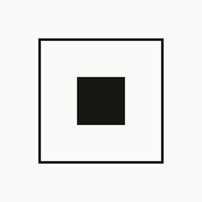
After four years aligning 80+ teams on Alexa's AI platform, I wanted to prove I could take an AI product from a blank repo to real users with my own hands. Brummell is the result: a consumer app, a merchant app and an agent-ready API, all running on one shared data layer.
I own all of it: strategy, product specs, architecture, code, AI evals, pricing, legal and go-to-market. Claude Code agents are my engineering team. I run them the way I ran teams at Amazon, with written specs, definitions of done and quality gates.
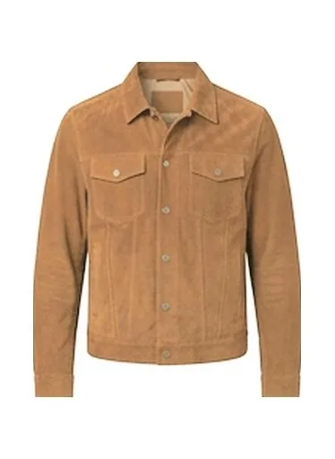
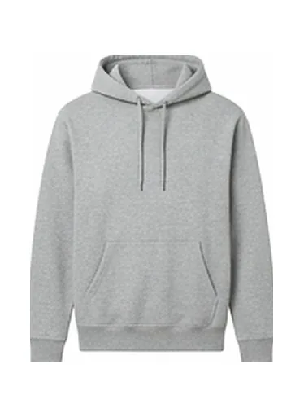
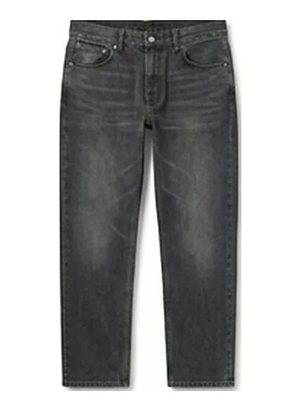
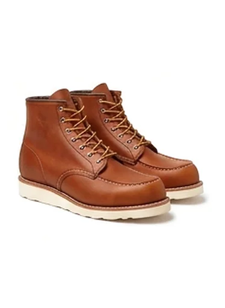
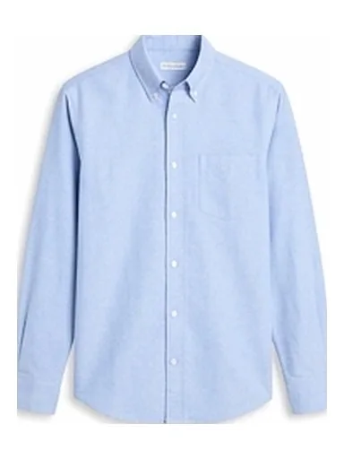
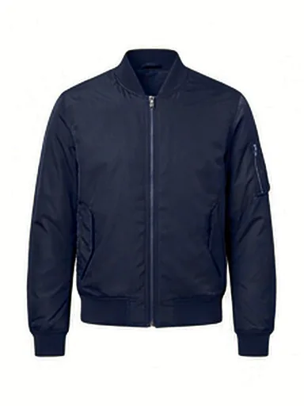
Look 2, put together from pieces you own.
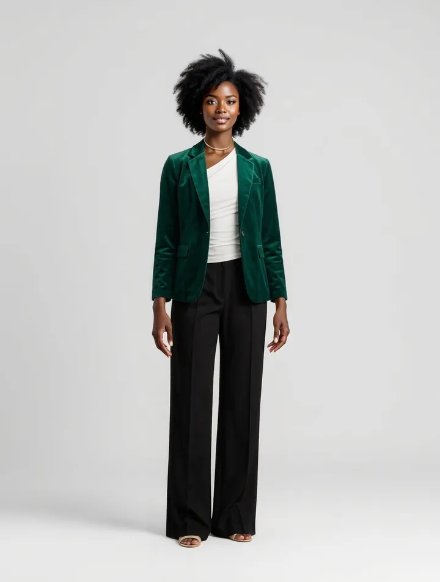
AI model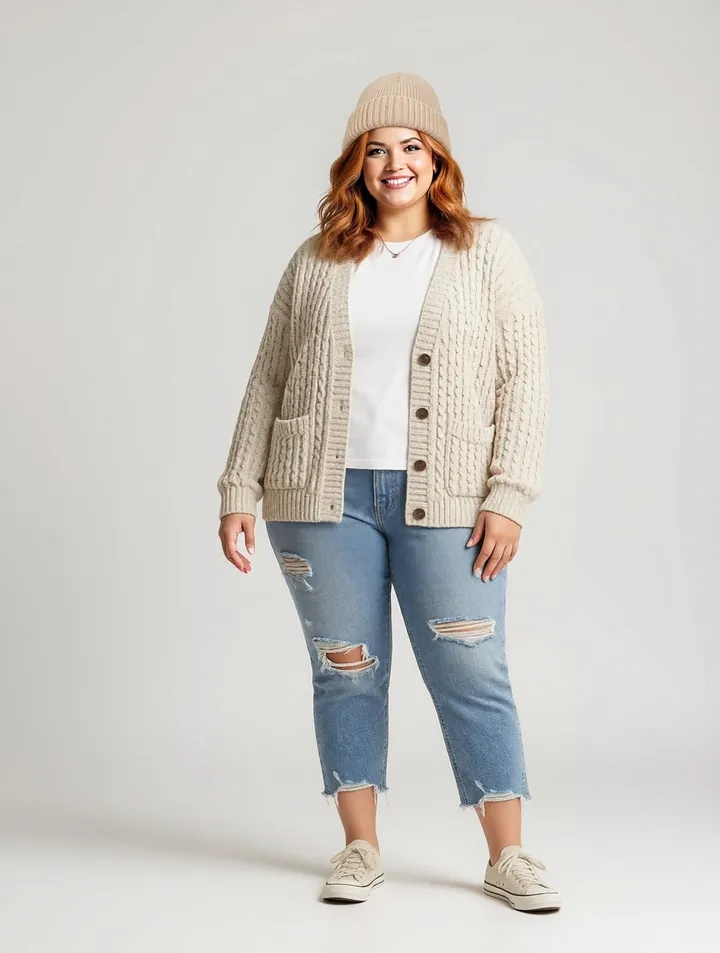
AI model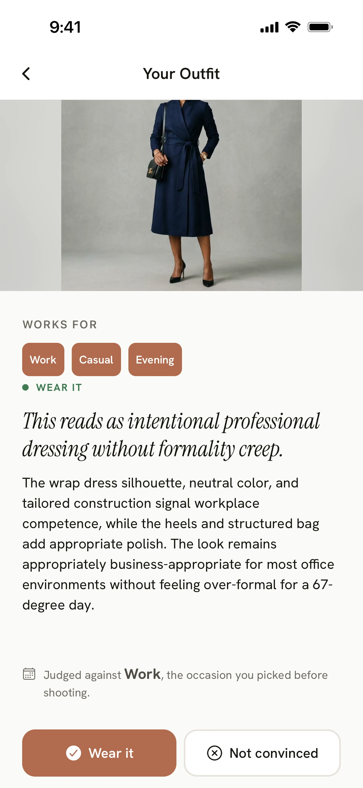
TestFlight betaDaily outfits from your own wardrobe, matched to weather and occasion. Vision AI turns one photo, your camera roll or forwarded order emails into a digital wardrobe. Includes Outfit Check, Store Check, Recreate a Look and a Lookbook with Try-On. Brummell+ subscription.
Try the iPhone beta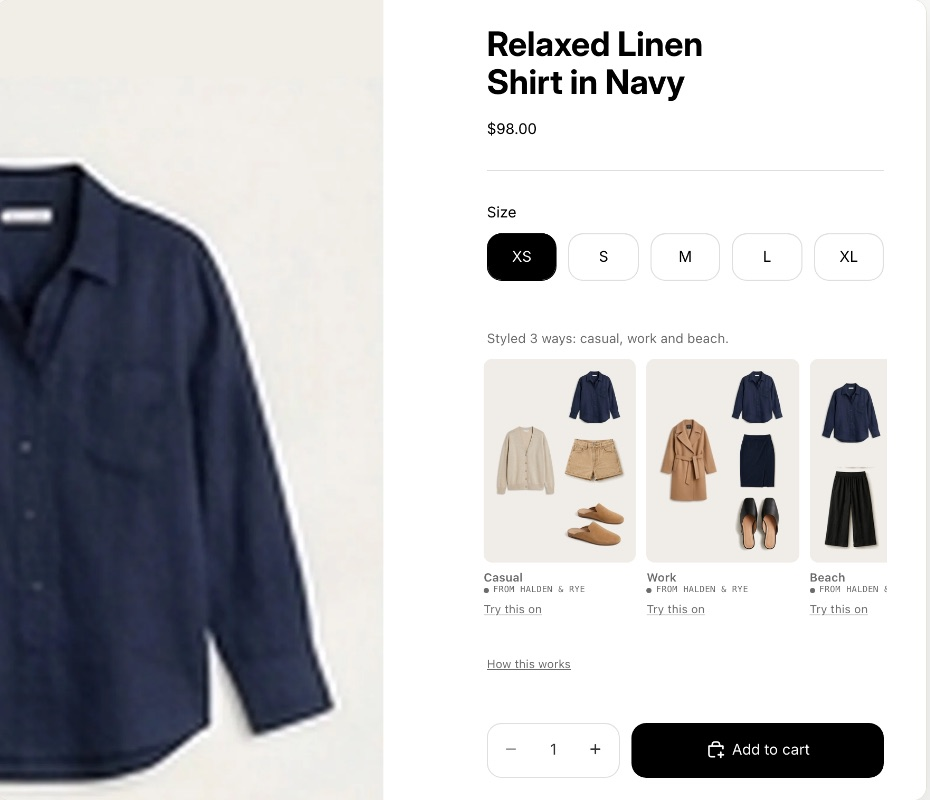
Pilot-readyThe same pairing engine on merchant product pages: a Versatility Strip, Complete the Look, a cart companion and virtual try-on. Lift is measured against a held-out control group with a sample-size gate. Each storefront script must stay inside a 40 KB budget.
See merchant siteLets any AI assistant read a shopper's wardrobe with OAuth 2.1 consent, so it can suggest outfits or avoid duplicate purchases. The store never sees the closet. Read-only by design.
Everything a real product needs: a 63-tile metrics dashboard where every feature ships with its own kill gate, the website, versioned Privacy Policy and Terms, biometric-safe vision prompts (clothing only, never faces), a vendor register, a security audit, App Store and Shopify compliance, pricing and outbound GTM.
Every feature starts as a written spec and decision record. Before the beta, I set phase gates and kill conditions, such as stopping and redesigning the matcher if fewer than 60% of Day-1 users would wear a suggestion. The data decides what gets built next, not my enthusiasm.
I assign each task to a model and effort level, with an explicit definition of done. I learned the hard way that agents will fake completion and game a grep-based "done" check. Now "done" means the verification actually ran and passed.
Golden-set evals gate every prompt or model change. A weekly latency regression job runs in CI. Row-level security covers every table. Performance budgets are enforced down to the byte.
All four products are in early beta with limited public visibility, so user numbers are too early to mean anything yet. These are the results I can measure honestly.
AI has collapsed the distance between deciding and building. I can set strategy across an 80-team platform, and I can personally take a product from a blank repo to a live beta. If you are building an AI product org that needs to ship like a startup, let's talk.
Autonomous multi-agent system that scans any developer domain, ranks the highest-signal unsolved problems, and identifies where incumbents are losing. Reports sold at $99. Each scan covers forums, GitHub, and review sites to surface what founders should build next.
Private · Reports from $99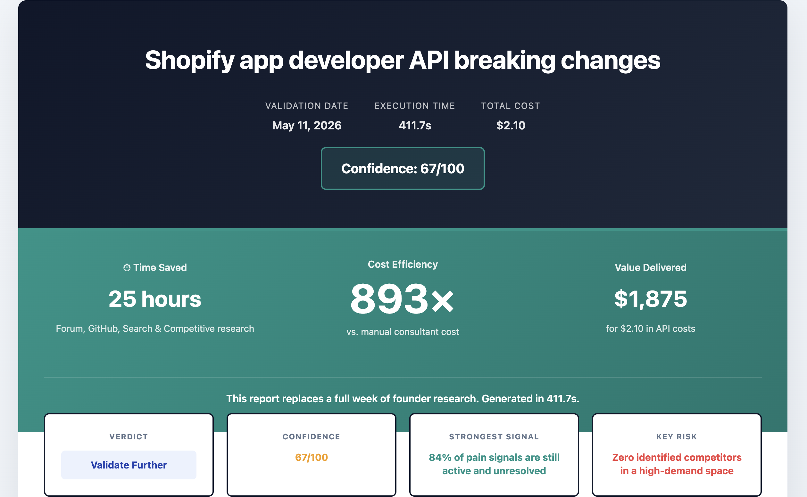
5 autonomous AI agents that validate startup ideas in minutes by analyzing forums, GitHub issues, search demand, and competitor traction. Validated and killed a SaaS idea before writing a line of product code, then open-sourced the toolkit. The foundation The ZeroGaps Project is built on.
Built with Claude Code · MIT Licensed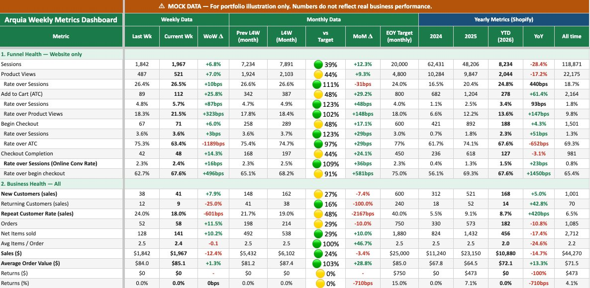
Unified Shopify, Google Analytics and third-party app data into a single executive dashboard. An AI agent populates KPIs every Monday and emails stakeholders a structured brief with highlights, lowlights and actions.
Built with Claude Code + Python
Architected vision for a unified AI development platform for Alexa+ builders. Designed six-layer system with 4 hero agents (Quality, Onboarding, Visual, International) cutting issue-to-fix from weeks to days, onboarding from weeks to 1 day, and 70% post-launch defect reduction.
Product Vision · Agent ArchitectureDesigned AI agent system to address Alexa's defect crisis (30k weekly tickets, 18-day avg resolution). Built modular components using MCP standards for reusability across debugging and feature development. Achieved 65-98% component accuracy, 4 hours saved per ticket, 50% resolution time reduction.
Built with science and engineering partnersOrchestrated the global AI platform strategy for Alexa, aligning 80+ domain teams on a unified technical roadmap. Designed two horizontal systems: a prompting layer and a self-reflection engine that became foundational infrastructure now powering Alexa+.
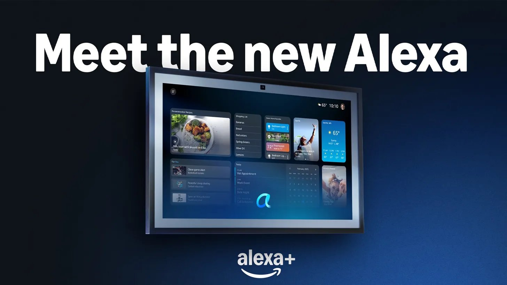
Led the complete digital transformation of a premium e-commerce brand. Beyond re-architecting the Shopify core, I executed a full website redesign with Claude Code and content overhaul to align the UX with Arquia’s high-end positioning. By integrating autonomous AI agents, I shifted the brand from manual operations to a scalable, evidence-based growth engine.
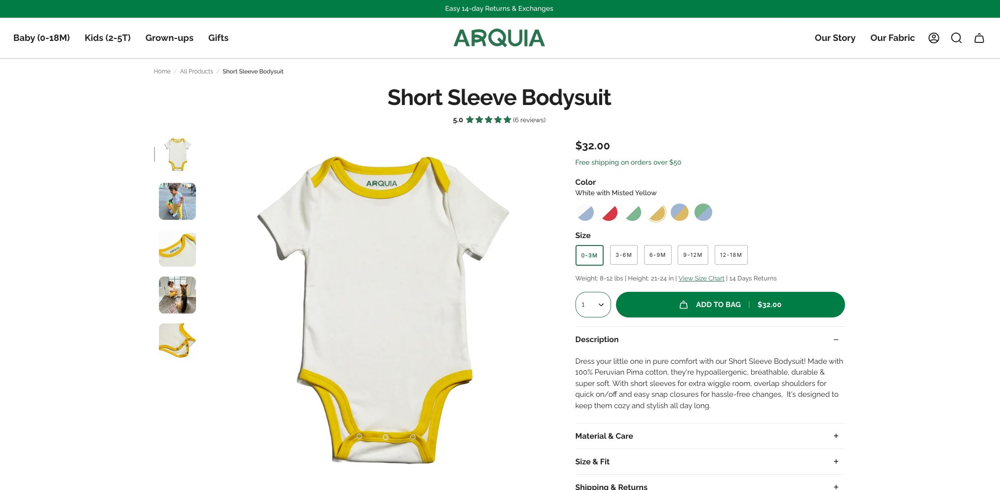
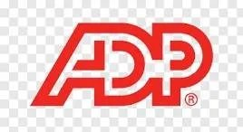
Led product strategy for ADP's AI and analytics platform (DataCloud) serving 80%+ of Fortune 500 companies and 1 in 6 US employees. Drove global expansion across 30+ countries, launched AI-powered benchmarking products and restructured the release cadence for 3x faster delivery.
Founded travel-tech startup solving two friction points in travel: time-consuming itinerary creation and generic guidebook recommendations. Built end-to-end product (cross-platform apps, content engine, community network) generating instant customized trip plans backed by 300+ local contributors. Led international engineering and design team.
Open to VP / Director Product roles · New York · Spain · US or Europe Remote